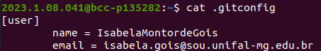
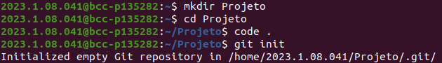
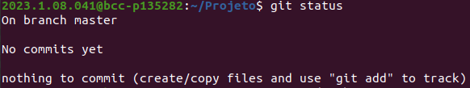
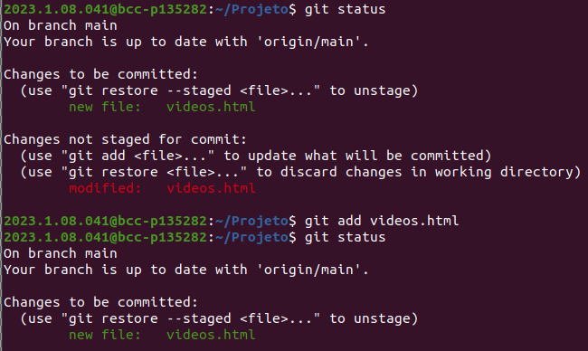
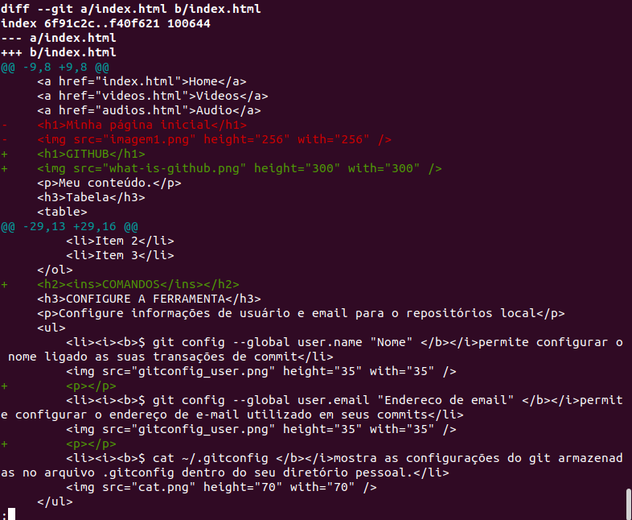
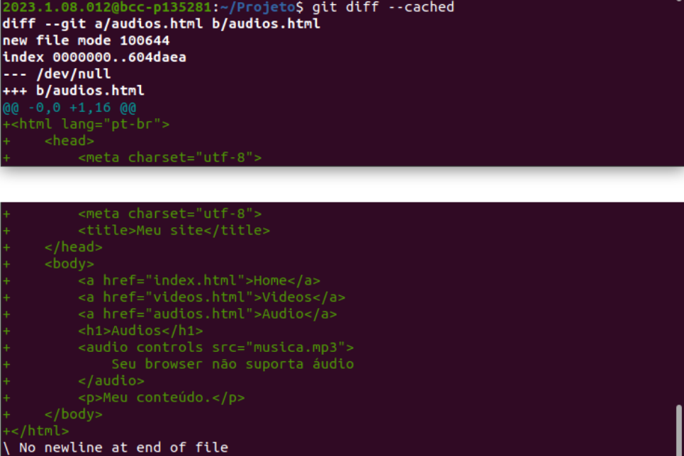
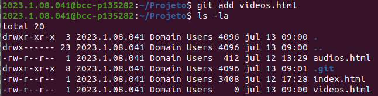
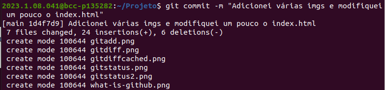

Home
Videos
Audio
Introdução ao GITHUB

Meu conteúdo.
Tabela
| Linha 1, Coluna 1 |
Linha 1, Coluna 2 |
| Linha 2, Coluna 1 |
Linha 2, Coluna 2 |
Lista com "ol"
- Item 1
- Item 2
- Item 3
COMANDOS
CONFIGURE A FERRAMENTA
Configure informações de usuário e email para o repositórios local
- $ git config --global user.name "Nome" permite configurar o nome ligado as suas transações de commit

- $ git config --global user.email "Endereco de email" permite configurar o endereço de e-mail utilizado em seus commits
- $ cat ~/.gitconfig mostra as configurações do git armazenadas no arquivo .gitconfig dentro do seu diretório pessoal.

CRIE REPOSITÓRIOS
Inicie um novo repositório ou obtenha de uma URL existente
- $ git init inicializa ou cria um novo repositório local

- $ git clone ssh://user@domain.com/repo.git clona um repositório existente

MODIFICAÇÕES LOCAIS
Revise edições e crie uma transação de commit
- $ git status lista todos os arquivos novos ou modificados para serem commitados
Exemplo na prática:

Exemplo na prática:

- $ git diff mostra diferenças no arquivo que não foram realizadas, ou seja, mostra as mudanças na árvore de trabalho ainda não preparadas para o próximo commit.
Exemplo na prática, após digitar o comando no terminal:

- $ git diff --cached mostra as alterações entre o índice e o seu último commit, ou seja, o que você estaria fazendo no commit caso você executasse o comando "git commit" sem a opção "-a".

- $ git add [arquivo] adicionará um arquivo à área de preparaçãos
Exemplo na prática, depois de realizar o comando "git add" listamos os arquivos com "ls -la"

- $ git commit -m "[mensagem descritiva]" permite que você especifique apenas um pequeno resumo para sua mensagem de commit

ATUALIZAR
- $ git fetch recuperar últimas mudanças da origem, mas não realizará o merge com a sua branch local (isso é o que git pull faz)
- $ git pull recupera e aplica as últimas modificações da origem
PUBLICAR
- $ git push envia modificações para a origem
MUDANÇAS EM GRUPO
- $ git branch lista todos os branches locais no repositório atual
- $ git branch [nome-do-branch] cria um novo branch
- $ git checkout [nome-do-branch]muda para o branch específico e atualiza o diretório de trabalho
- $ git merge [branch] combina o histórico do branch específico com o branch atual, ou seja, faz um merge da [branch] no HEAD atual
DESFAÇA COMMITS
Apague enganos e crie um histórico substituto